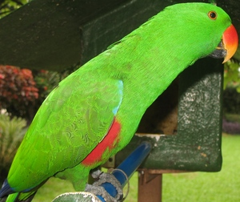

kalusisi 
/kalusisi/
n.
Loriculus_philippensis_Tanygnathus_spp.
Philippine hanging parakeet
Ka kalusisi iyan ka ngaran te bayaku ne egkaayun ne eg-ayamen tenged su egkaayun ne igpanuhal. Egkasewuhan te malalab ka meilem ne batek din iyan naam pa iya ka lukesan. Matale seini ne eglalag wey malehed te behas te me kayu iling te luhimit, wey malehed degma te sahing ne neyinuhan.
Mateles ne ayam ka kalusisi su matalè.
Parrot is nice pet because it is talkative.
Cult. Green with scarlet forehead, throat and rump, 6 in. long, feed on fruits and coconut blossoms.
Eng. parakeet; parrot; bird variety
Tag. kolasisi
Ceb. kusi; kolansi; kolasisi
OCM: Fauna (136)
DDP: Bird (1.6.1.2)
Online dict status: -
Usage level: MT
Updated by: RJH,AAA,TME
Last updated: 13/Oct/2009
This page last updated: 19/May/2012
Copyright © 2009-2010, Matigsalug Language Christian Association, Inc